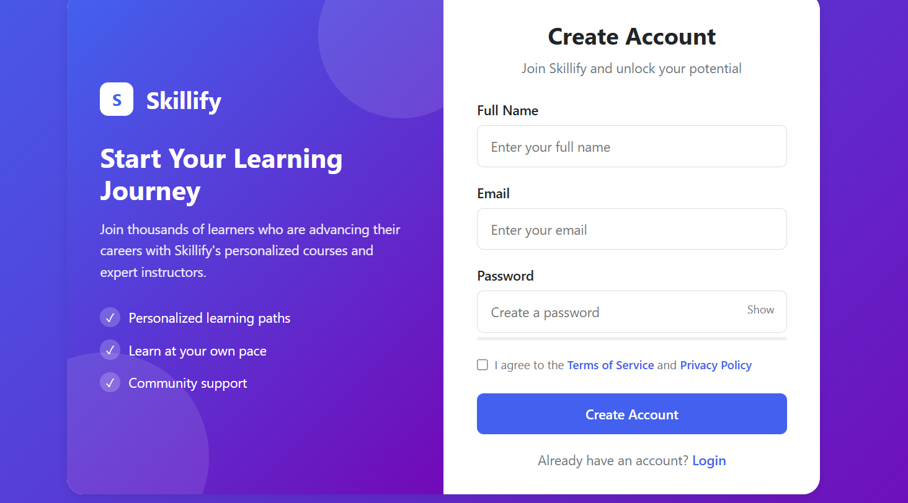
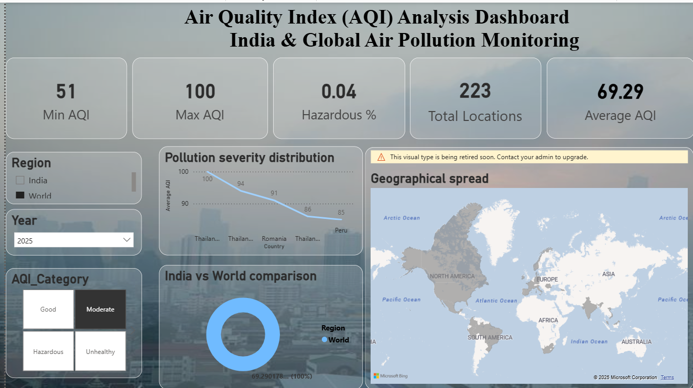

Skillify is a student skill analysis platform that evaluates performance using structured assessments and analytical models. It processes test data to identify strengths, weaknesses, and learning gaps, helping students understand where they need improvement. The project focuses on data-driven decision making, assessment logic, and meaningful feedback generation.

This project analyzes real-time air quality data collected through public APIs to study pollution trends and patterns. Interactive dashboards were created to visualize AQI levels across locations, enabling better understanding of environmental conditions and data-driven insights.
Power BI • API • Data Visualization
🧑💻 View Code
This project involves building and evaluating machine learning models to predict the likelihood of diabetes using medical and lifestyle-related features. The focus was on data preprocessing, feature selection, model training, and evaluating prediction accuracy to support early risk identification.
🧑💻 View CodeThis project analyzes student-related data to predict academic performance and productivity levels. Decision tree and regression-based models were applied to understand how different factors influence student outcomes, supporting data-driven academic insights.
🧑💻 View Code
This project focuses on cleaning and analyzing crime datasets to uncover patterns, trends, and key insights related to criminal activities. The analysis helps in understanding crime distribution and behavioral trends using structured data exploration techniques.
🧑💻 View CodeThis case study analyzes Netflix content data to explore trends in genres, release patterns, and content distribution. The project emphasizes exploratory data analysis, visualization, and insight generation to understand entertainment consumption behavior.
Offline Case Study | Data Analysis